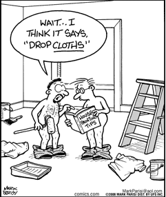

Phonetics

The Sounds of language
Phonetics is the study of the sounds of a language. In English, and in many other languages, how words are spelled does not necessarily correspond to how they are pronounced. Some languages are much closer in pronunciation to the way they are spelled. English is notorious for its erratic spelling in relation to pronunciation.
An important aspect of the study of phonetics is learning the International Phonetic Alphabet (IPA), whose symbols are used to describe specific sounds. The IPA is independent of any specific language, all world languages can be transcribed using its symbols, which include sounds such as the clicks used in some African languages. The word "fish" is rendered in IPA as / fɪʃ /. Note that the IPA symbols are placed between slashes.
Here are some of the IPA symbols for English vowels:
| ɑ | father | ʌ | run, enough | |
|---|---|---|---|---|
| ɪ | sit | ɑ | not, wasp | |
| i | see | ʊ | put, wood | |
| ɛ | bed | u | soon, through | |
| æ | lad, cat, ran | ə | about |